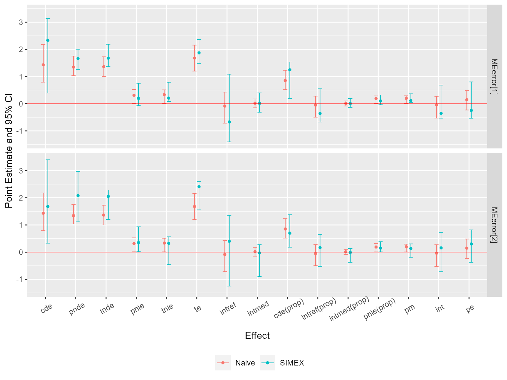

We illustrate the general workflow of the CMAverse package by a quick example. The general workflow is:
Plot the DAG of causal relationships using
cmdag.Estimate causal effects and make inferences using
cmest.Conduct sensitivity analysis for unmeasured confounding and measurement error using
cmsens.
Firstly, let’s load the package.
Next, we simulate some data and plot the DAG. The simulated dataset contains a binary exposure, a binary mediator, a continuous mediator, a continuous outcome and two baseline confounders.
set.seed(1) n <- 100 C1 <- rnorm(n, mean = 1, sd = 1) C2 <- rbinom(n, 1, 0.6) pa <- exp(0.2 - 0.5*C1 + 0.1*C2)/(1 + exp(0.2 - 0.5*C1 + 0.1*C2)) A <- rbinom(n, 1, pa) pm <- exp(1 + 0.5*A - 1.5*C1 + 0.5*C2)/ (1 + exp(1 + 0.5*A - 1.5*C1 + 0.5*C2)) M1 <- rbinom(n, 1, pm) M2 <- rnorm(n, 2 + 0.8*A - M1 + 0.5*C1 + 2*C2, 1) Y <- rnorm(n, mean = 0.5 + 0.4*A + 0.5*M1 + 0.6*M2 + 0.3*A*M1 + 0.2*A*M2 - 0.3*C1 + 2*C2, sd = 1) data <- data.frame(A, M1, M2, Y, C1, C2)
The DAG can be plotted using cmdag.
cmdag(outcome = "Y", exposure = "A", mediator = c("M1", "M2"), basec = c("C1", "C2"), postc = NULL, node = FALSE, text_col = "black")

Then, we estimate causal effects using cmest. We use the regression-based approach for illustration. The reference values for the exposure are set to be 0 and 1. The reference values for the two mediators are set to be 1.
est <- cmest(data = data, model = "rb", outcome = "Y", exposure = "A", mediator = c("M1", "M2"), basec = c("C1", "C2"), EMint = TRUE, mreg = list("logistic", "linear"), yreg = "linear", astar = 0, a = 1, mval = list(1, 1), estimation = "imputation", inference = "bootstrap", nboot = 20)
Summarize and plot the results:
summary(est)
## Causal Mediation Analysis via the Regression-based Approach
##
## Direct counterfactual imputation estimation with
## bootstrap standard errors, percentile confidence intervals and p-values
##
## Estimate Std.error 95% CIL 95% CIU P.val
## cde 1.431445 0.406563 0.791552 2.177 <2e-16 ***
## pnde 1.345009 0.210568 1.034657 1.751 <2e-16 ***
## tnde 1.363720 0.222721 1.001818 1.727 <2e-16 ***
## pnie 0.315062 0.175113 0.012484 0.526 0.1 .
## tnie 0.333773 0.150220 0.011253 0.510 <2e-16 ***
## te 1.678782 0.282291 1.201192 2.157 <2e-16 ***
## intref -0.086436 0.340713 -0.716350 0.427 0.7
## intmed 0.018712 0.094136 -0.148749 0.177 1.0
## cde(prop) 0.852669 0.204465 0.517111 1.231 <2e-16 ***
## intref(prop) -0.051487 0.223188 -0.496311 0.279 0.7
## intmed(prop) 0.011146 0.054510 -0.083948 0.103 1.0
## pnie(prop) 0.187673 0.099768 0.009682 0.317 0.1 .
## pm 0.198819 0.084045 0.008982 0.292 <2e-16 ***
## int -0.040341 0.234302 -0.528828 0.273 0.7
## pe 0.147331 0.204465 -0.230814 0.483 0.6
## ---
## Signif. codes: 0 '***' 0.001 '**' 0.01 '*' 0.05 '.' 0.1 ' ' 1
##
## Reference values:
## $a
## [1] 1
##
## $astar
## [1] 0
##
## $mval
## $mval[[1]]
## [1] 1
##
## $mval[[2]]
## [1] 1ggcmest(est) + ggplot2::theme(axis.text.x = ggplot2::element_text(angle = 30, vjust = 0.8))

Lastly, we conduct sensitivity analysis for the results. Sensitivity analysis for unmeasured confounding:
cmsens(object = est, sens = "uc")
## Sensitivity Analysis For Unmeasured Confounding
##
## Evalues on the risk or rate ratio scale:
## estRR lowerRR upperRR Evalue.estRR Evalue.lowerRR Evalue.upperRR
## cde 1.719704 1.2724617 2.324143 2.832214 1.861272 NA
## pnde 1.664318 1.4239257 1.945293 2.715810 2.200868 NA
## tnde 1.676154 1.4211994 1.976847 2.740738 2.194897 NA
## pnie 1.126739 0.9896507 1.282818 1.504631 1.000000 NA
## tnie 1.134753 1.0152410 1.268333 1.525791 1.139632 NA
## te 1.888589 1.5321886 2.327891 3.184035 2.435191 NAAssume that \(C_1\) was measured with error. Sensitivity analysis for measurement error using regression calibration with a set of assumed error standard deviations 0.1, 0.2 and 0.3:
me1 <- cmsens(object = est, sens = "me", MEmethod = "rc", MEvariable = "C1", MEvartype = "con", MEerror = c(0.1, 0.2, 0.3))
Summarize and plot the results:
summary(me1)
## Sensitivity Analysis For Measurement Error
##
## The variable measured with error: C1
## Type of the variable measured with error: continuous
##
## Measurement error 1:
## [1] 0.1
##
## Measurement error correction for measurement error 1:
## Estimate Std.error 95% CIL 95% CIU P.val
## cde 1.43076 0.43053 0.78264 2.206 <2e-16 ***
## pnde 1.34824 0.24298 0.97374 1.815 <2e-16 ***
## tnde 1.38101 0.20923 1.03515 1.797 <2e-16 ***
## pnie 0.40018 0.14722 0.06156 0.519 <2e-16 ***
## tnie 0.43295 0.13878 0.10969 0.577 <2e-16 ***
## te 1.78119 0.21679 1.28260 2.075 <2e-16 ***
## intref -0.08252 0.34387 -0.61192 0.384 1.0
## intmed 0.03277 0.07524 -0.09464 0.159 0.7
## cde(prop) 0.80326 0.20582 0.54144 1.272 <2e-16 ***
## intref(prop) -0.04633 0.20149 -0.36613 0.216 1.0
## intmed(prop) 0.01840 0.04925 -0.05040 0.117 0.7
## pnie(prop) 0.22467 0.08389 0.03838 0.306 <2e-16 ***
## pm 0.24307 0.08331 0.06545 0.356 <2e-16 ***
## int -0.02793 0.22179 -0.38550 0.272 0.9
## pe 0.19674 0.20582 -0.27174 0.459 0.5
## ---
## Signif. codes: 0 '***' 0.001 '**' 0.01 '*' 0.05 '.' 0.1 ' ' 1
## ----------------------------------------------------------------
##
## Measurement error 2:
## [1] 0.2
##
## Measurement error correction for measurement error 2:
## Estimate Std.error 95% CIL 95% CIU P.val
## cde 1.428557 0.393479 0.611944 2.076 <2e-16 ***
## pnde 1.357211 0.201319 0.996464 1.718 <2e-16 ***
## tnde 1.369517 0.194615 1.028962 1.688 <2e-16 ***
## pnie 0.283031 0.169552 0.235758 0.826 <2e-16 ***
## tnie 0.295338 0.151727 0.221658 0.666 <2e-16 ***
## te 1.652548 0.188754 1.545232 2.191 <2e-16 ***
## intref -0.071346 0.395349 -0.760170 0.594 0.9
## intmed 0.012307 0.129236 -0.235029 0.170 0.8
## cde(prop) 0.864457 0.225912 0.327326 1.192 <2e-16 ***
## intref(prop) -0.043173 0.219047 -0.430980 0.322 0.9
## intmed(prop) 0.007447 0.070993 -0.134474 0.086 0.8
## pnie(prop) 0.171270 0.086076 0.150067 0.445 <2e-16 ***
## pm 0.178717 0.081775 0.133402 0.381 <2e-16 ***
## int -0.035726 0.263140 -0.554070 0.399 0.9
## pe 0.135543 0.225912 -0.191656 0.673 0.3
## ---
## Signif. codes: 0 '***' 0.001 '**' 0.01 '*' 0.05 '.' 0.1 ' ' 1
## ----------------------------------------------------------------
##
## Measurement error 3:
## [1] 0.3
##
## Measurement error correction for measurement error 3:
## Estimate Std.error 95% CIL 95% CIU P.val
## cde 1.42431 0.50323 0.57335 2.388 <2e-16 ***
## pnde 1.34204 0.26162 0.80960 1.749 <2e-16 ***
## tnde 1.36328 0.26030 0.86008 1.734 <2e-16 ***
## pnie 0.34432 0.15834 0.18389 0.661 <2e-16 ***
## tnie 0.36556 0.16587 0.12428 0.710 <2e-16 ***
## te 1.70760 0.22640 1.31552 2.083 <2e-16 ***
## intref -0.08227 0.46739 -0.76747 0.633 1.0
## intmed 0.02124 0.10618 -0.14879 0.198 0.8
## cde(prop) 0.83410 0.27404 0.38618 1.257 <2e-16 ***
## intref(prop) -0.04818 0.27678 -0.48367 0.352 1.0
## intmed(prop) 0.01244 0.05959 -0.07844 0.107 0.8
## pnie(prop) 0.20164 0.09793 0.10915 0.431 <2e-16 ***
## pm 0.21408 0.09928 0.07053 0.429 <2e-16 ***
## int -0.03574 0.29369 -0.51003 0.407 0.9
## pe 0.16590 0.27404 -0.25711 0.614 0.7
## ---
## Signif. codes: 0 '***' 0.001 '**' 0.01 '*' 0.05 '.' 0.1 ' ' 1
## ----------------------------------------------------------------ggcmsens(me1) + ggplot2::theme(axis.text.x = ggplot2::element_text(angle = 30, vjust = 0.8))

Then, assume that the exposure was measured with error. Sensitivity analysis for measurement error using SIMEX with two assumed misclassification matrices:
me2 <- cmsens(object = est, sens = "me", MEmethod = "simex", MEvariable = "A", MEvartype = "cat", B = 5, MEerror = list(matrix(c(0.95, 0.05, 0.05, 0.95), nrow = 2), matrix(c(0.9, 0.1, 0.1, 0.9), nrow = 2)))
Summarize and plot the results:
summary(me2)
## Sensitivity Analysis For Measurement Error
##
## The variable measured with error: A
## Type of the variable measured with error: categorical
##
## Measurement error 1:
## [,1] [,2]
## [1,] 0.95 0.05
## [2,] 0.05 0.95
##
## Measurement error correction for measurement error 1:
## Estimate Std.error 95% CIL 95% CIU P.val
## cde 2.21110 0.69574 0.37887 2.833 <2e-16 ***
## pnde 1.63773 0.24702 1.17160 2.077 <2e-16 ***
## tnde 1.65194 0.23758 1.15920 1.964 <2e-16 ***
## pnie 0.37868 0.30230 -0.10071 0.997 0.1 .
## tnie 0.39289 0.33533 -0.09590 1.075 0.1 .
## te 2.03063 0.33679 1.50782 2.661 <2e-16 ***
## intref -0.57337 0.65001 -1.32031 0.941 1.0
## intmed 0.01421 0.17526 -0.22401 0.359 0.8
## cde(prop) 1.08888 0.35534 0.20014 1.477 <2e-16 ***
## intref(prop) -0.28236 0.35452 -0.68108 0.510 1.0
## intmed(prop) 0.00700 0.09505 -0.12459 0.197 0.8
## pnie(prop) 0.18649 0.12904 -0.07130 0.406 0.1 .
## pm 0.19348 0.14028 -0.06742 0.420 0.1 .
## int -0.27536 0.33245 -0.61868 0.510 0.9
## pe -0.08888 0.35534 -0.47677 0.800 0.5
## ---
## Signif. codes: 0 '***' 0.001 '**' 0.01 '*' 0.05 '.' 0.1 ' ' 1
## ----------------------------------------------------------------
##
## Measurement error 2:
## [,1] [,2]
## [1,] 0.9 0.1
## [2,] 0.1 0.9
##
## Measurement error correction for measurement error 2:
## Estimate Std.error 95% CIL 95% CIU P.val
## cde 2.04723 0.97130 -0.12672 3.504 0.2
## pnde 1.67491 0.33785 1.07500 2.200 <2e-16 ***
## tnde 1.56586 0.34990 1.02345 2.241 <2e-16 ***
## pnie 0.42435 0.24822 -0.07231 0.725 0.2
## tnie 0.31530 0.24789 -0.04489 0.779 0.2
## te 1.99021 0.34586 1.34273 2.495 <2e-16 ***
## intref -0.37232 0.81379 -1.45417 1.507 0.8
## intmed -0.10905 0.21313 -0.27483 0.450 0.7
## cde(prop) 1.02865 0.45365 -0.08984 1.561 0.2
## intref(prop) -0.18707 0.45249 -0.64322 0.984 0.8
## intmed(prop) -0.05479 0.10032 -0.12415 0.202 0.7
## pnie(prop) 0.21322 0.11902 -0.03666 0.345 0.2
## pm 0.15843 0.11279 -0.02040 0.355 0.2
## int -0.24187 0.46163 -0.57657 0.971 0.7
## pe -0.02865 0.45365 -0.56136 1.090 0.4
## ---
## Signif. codes: 0 '***' 0.001 '**' 0.01 '*' 0.05 '.' 0.1 ' ' 1
## ----------------------------------------------------------------ggcmsens(me2) + ggplot2::theme(axis.text.x = ggplot2::element_text(angle = 30, vjust = 0.8))
